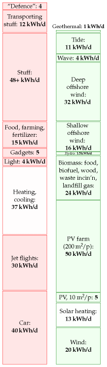
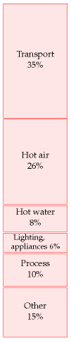
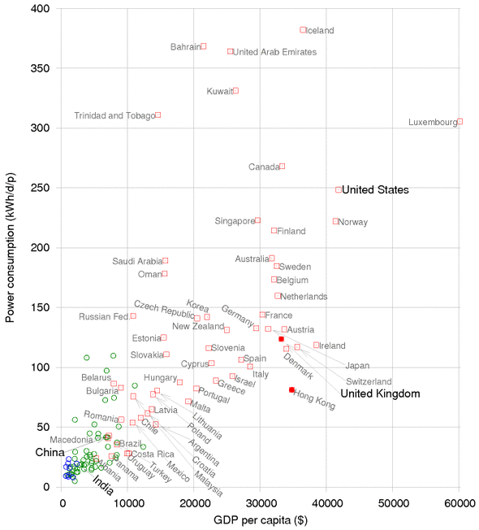
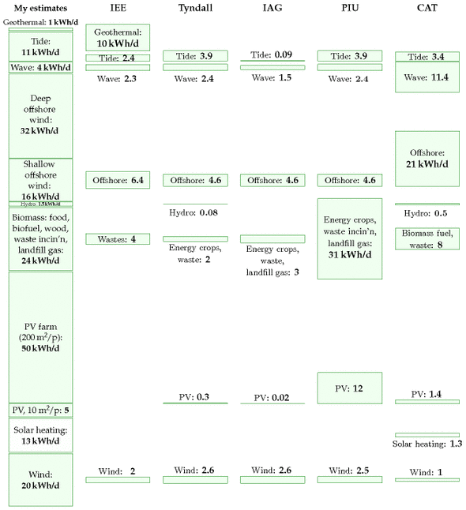
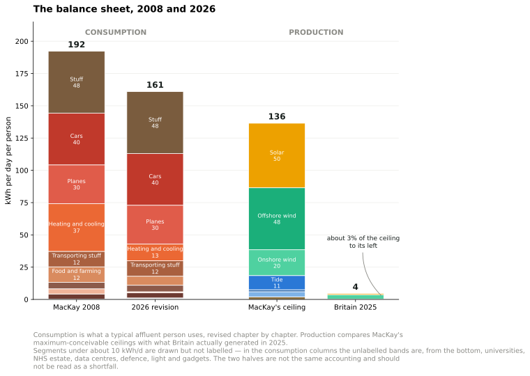

18 Can we live on renewables?

Figure 18.1. The state of play after we added up all the traditional renewables.
The red stack in figure 18.1 adds up to 195 kWh per day per person. The green stack adds up to about 180 kWh/d/p. A close race! But please remember: in calculating our production stack we threw all economic, social, and environmental constraints to the wind. Also, some of our green contributors are probably incompatible with each other: our photovoltaic panels and hot-water panels would clash with each other on roofs; and our solar photovoltaic farms using 5% of the country might compete with the energy crops with which we covered 75% of the country. If we were to lose just one of our bigger green contributors – for example, if we decided that deep offshore wind is not an option, or that panelling 5% of the country with photovoltaics at a cost of £200 000 per person is not on – then the production stack would no longer match the consumption stack.
Furthermore, even if our red consumption stack were lower than our green production stack, it would not necessarily mean our energy sums are adding up. You can’t power a TV with cat food, nor can you feed a cat from a wind turbine. Energy exists in different forms – chemical, electrical, kinetic, and heat, for example. For a sustainable energy plan to add up, we need both the forms and amounts of energy consumption and production to match up. Converting energy from one form to another – from chemical to electrical, as at a fossil-fuel power station, or from electrical to chemical, as in a factory making hydrogen from water – usually involves substantial losses of useful energy. We will come back to this important detail in Chapter 27, which will describe some energy plans that do add up.
Here we’ll reflect on our estimates of consumption and production, compare them with official averages and with other people’s estimates, and discuss how much power renewables could plausibly deliver in a country like Britain.
The questions we’ll address in this chapter are:
- Is the size of the red stack roughly correct? What is the average consumption of Britain? We’ll look at the official energy-consumption numbers for Britain and a few other countries.
- Have I been unfair to renewables, underestimating their potential? We’ll compare the estimates in the green stack with estimates published by organizations such as the Sustainable Development Commission, the Institution of Electrical Engineers, and the Centre for Alternative Technology.
- What happens to the green stack when we take into account social and economic constraints?

Figure 18.2. Energy consumption, broken down by end use, according to the Department for Trade and Industry.
Red reflections
Our estimate of a typical affluent person’s consumption (figure 18.1) has reached 195 kWh per day. It is indeed true that many people use this much energy, and that many more aspire to such levels of consumption. The average American consumes about 250 kWh per day. If we all raised our standard of consumption to an average American level, the green production stack would definitely be dwarfed by the red consumption stack.
What about the average European and the average Brit? Average European consumption of “primary energy” (which means the energy contained in raw fuels, plus wind and hydroelectricity) is about 125 kWh per day per person. The UK average is also 125 kWh per day per person. 1
These official averages do not include two energy flows. First, the “embedded energy” in imported stuff (the energy expended in making the stuff) is not included at all. We estimated in Chapter 15 that the embedded energy in imported stuff is at least 40 kWh/d per person. Second, the official estimates of “primary energy consumption” include only industrial energy flows – things like fossil fuels and hydroelectricity – and don’t keep track of the natural embedded energy in food: energy that was originally harnessed by photosynthesis.
Another difference between the red stack we slapped together and the national total is that in most of the consumption chapters so far we tended to ignore the energy lost in converting energy from one form to another, and in transporting energy around. For example, the “car” estimate in Part I covered only the energy in the petrol, not the energy used at the oil refinery that makes the petrol, nor the energy used in trundling the oil and petrol from A to B. The national total accounts for all the energy, before any conversion losses. Conversion losses in fact account for about 22% of total national energy consumption. Most of these conversion losses happen at power stations. Losses in the electricity transmission network chuck away 1% of total national energy consumption. 2
When building our red stack, we tried to imagine how much energy a typical affluent person uses. Has this approach biased our perception of the importance of different activities? Let’s look at some official numbers. Figure 18.2 shows the breakdown of energy consumption by end use. The top two categories are transport and heating (hot air and hot water). Those two categories also dominated the red stack in Part I. Good.
| Mode | Fuel | kWh/d per person |
|---|---|---|
| Road transport | Petroleum | 22.5 |
| Railways | Petroleum | 0.4 |
| Water transport | Petroleum | 1.0 |
| Aviation | Petroleum | 7.4 |
| All modes | Electricity | 0.4 |
| All energy used by transport | 31.6 |
Table 18.3. 2006 breakdown of energy consumption by transport mode, in kWh/d per person. Source: Dept. for Transport (2007).

Figure 18.4. Power consumption per capita, versus GDP per capita, in purchasing-power-parity US dollars. Squares show countries having “high human development;” circles, “medium” or “low.” Figure 30.1 shows the same data on logarithmic scales. 3
Let’s look more closely at transport. In our red stack, we found that the energy footprints of driving a car 50 km per day and of flying to Cape Town once per year are roughly equal. Table 18.3 shows the relative importances of the different transport modes in the national balance-sheet. In the national averages, aviation is smaller than road transport.
How do Britain’s official consumption figures compare with those of other countries? Figure 18.4 shows the power consumptions of lots of countries or regions, versus their gross domestic products (GDPs). There’s an evident correlation between power consumption and GDP: the higher a country’s GDP (per capita), the more power it consumes per capita. The UK is a fairly typical high-GDP country, surrounded by Germany, France, Japan, Austria, Ireland, Switzerland, and Denmark. The only notable exception to the rule “big GDP implies big power consumption” is Hong Kong. Hong Kong’s GDP per capita is about the same as Britain’s, but Hong Kong’s power consumption is about 80 kWh/d/p.
(Figure omitted from this edition: third-party rights.)
Figure 18.5. Hong Kong. Photo by Samuel Louie and Carol Spears.
The message I take from these country comparisons is that the UK is a fairly typical European country, and therefore provides a good case study for asking the question “How can a country with a high quality of life get its energy sustainably?”
Green reflections
People often say that Britain has plenty of renewables. Have I been mean to green? Are my numbers a load of rubbish? Have I underestimated sustainable production? Let’s compare my green numbers first with several estimates found in the Sustainable Development Commission’s publication The role of nuclear power in a low carbon economy. Reducing CO2 emissions – nuclear and the alternatives. Remarkably, even though the Sustainable Development Commission’s take on sustainable resources is very positive (“We have huge tidal, wave, biomass and solar resources”), all the estimates in the Sustainable Development Commission’s document are smaller than mine! (To be precise, all the estimates of the renewables total are smaller than my total.) The Sustainable Development Commission’s publication gives estimates from four sources detailed below (IEE, Tyndall, IAG, and PIU). Figure 18.6 shows my estimates alongside numbers from these four sources and numbers from the Centre for Alternative Technology (CAT). Here’s a description of each source.
- IEE The Institute of Electrical Engineers published a report on renewable energy in 2002 – a summary of possible contributions from renewables in the UK. The second column of figure 18.6 shows the “technical potential” of a variety of renewable technologies for UK electricity generation – “an upper limit that is unlikely ever to be exceeded even with quite dramatic changes in the structure of our society and economy.” According to the IEE, the total of all renewables’ technical potential is about 27 kWh/d per person.
- Tyndall The Tyndall Centre’s estimate of the total practicable renewable energy resource is 15 kWh per day per person.
- IAG The Interdepartmental Analysts Group’s estimates of renewables, take into account economic constraints. Their total practical and economical resource (at a retail price of 7p/kWh) is 12 kWh per day per person.
- PIU The “PIU” column shows the “indicative resource potential for renewable electricity generation options” from the DTI’s contribution to the PIU review in 2001. For each technology I show their “practical maximum,” or, if no practical maximum was given, their “theoretical maximum.”
- CAT The final column shows the numbers from the Centre for Alternative Technology’s “Island Britain” plan Helweg-Larsen and Bull (2007).

Figure 18.6. Estimates of theoretical or practical renewable resources in the UK, by the Institute of Electrical Engineers, the Tyndall Centre, the Interdepartmental Analysts Group, and the Performance and Innovation Unit; and the proposals from the Centre for Alternative Technology’s “Island Britain” plan for 2027.
Bio-powered Europe
Sometimes people ask me “surely we used to live on renewables just fine, before the Industrial Revolution?” Yes, but don’t forget that two things were different then: lifestyles, and population densities.
Turning the clock back more than 400 years, Europe lived almost entirely on sustainable sources: mainly wood and crops, augmented by a little wind power, tidal power, and water power. It’s been estimated that the average person’s lifestyle consumed a power of 20 kWh per day. 4 The wood used per person was 4 kg per day, which required 1 hectare (10 000 m2) of forest per person. The area of land per person in Europe in the 1700s was 52 000 m2. In the regions with highest population density, the area per person was 17 500 m2 of arable land, pastures, and woods. Today the area of Britain per person is just 4000 m2, so even if we reverted to the lifestyle of the Middle Ages and completely forested the country, we could no longer live sustainably here. Our population density is far too high.
The balance sheet, eighteen years on
A section added in the 2026 revision. This chapter is where the two stacks are set against each other, so it is where the revisions made throughout this edition should be totalled.

Figure 18.10. The balance sheet, 2008 and 2026. Added in the 2026 revision. Consumption is a typical affluent person’s use, revised chapter by chapter through this edition. Production sets MacKay’s maximum-conceivable ceilings beside what Britain actually generated in 2025. The two halves are not the same accounting, and the gap between the third and fourth columns is a measure of distance from a physical limit, not a shortfall against a plan.6
What actually happened to British consumption
MacKay puts the official United Kingdom average at 125 kWh/d per person of primary energy, against the 195 kWh/d he builds for a typical affluent individual.
The Energy Institute’s series gives British total energy supply as 9.19 EJ in 2008 and 6.29 EJ in 2025. Across the populations of those years that is a fall from about 114 to 70 kWh per day per person — roughly 39%, on a slightly different boundary from the figure MacKay quotes but the same quantity.7
Nothing in this book predicted that. It is the largest single change in the eighteen years, and it happened without anyone living in a cave.
The obvious objection is that Britain simply got poorer. It did not, and the relationship is worth looking at directly.
Figure 18.11. Energy use per person against GDP per person, from Our World in Data. The strong relationship across countries is the one chapter L is about — nobody is rich on little energy. What matters here is the path each rich country has traced over time: Britain’s moves left while continuing to move up.
Figure 18.12. Fossil energy per person against GDP per person. The same picture with the fossil component separated, which falls faster than total energy because the electricity supplying it has been decarbonised.
So the fall is real decoupling, not impoverishment. But chapter 15 supplies the half of the explanation that these charts cannot show. A territorial energy statistic falls when a smelter closes and its output is imported, and it falls exactly as convincingly as when a house is insulated. Britain’s steel production is the lowest since the 1930s, two of six refineries have closed since 2019, and the imported share of the national carbon footprint has risen from 34% to about 61%. Some of the leftward movement in these charts is efficiency, some is cleaner supply, and some is that the making of things left the country. The three are indistinguishable on this axis, which is why chapter 15 goes to the trouble of separating them.
There is one instrument built for exactly this separation, and chapter L describes it: ODEX, the energy-efficiency index of the ODYSSEE-MURE project. It is climate-corrected and, more importantly, it measures technical efficiency at sector level rather than energy per unit of output, so a country that closes a smelter does not thereby appear to have become efficient. Across the EU it improved 1.4% a year between 2010 and 2023, 16% in total, with households, industry and services all near 1.6% a year and accelerating past 2.2% after 2019, while transport lagged at 0.9%.
Those are real efficiency gains, and they are considerably smaller than the fall in consumption. A 16% efficiency improvement does not produce a 39% fall in energy use. The remainder is structure — what a country makes, buys and imports — which is the subject of chapter 15 and not of this book’s method.
The red stack, revised
Where this edition has changed a consumption figure, it is because the underlying assumption was wrong or the technology moved:
| Chapter | MacKay | This edition | Why |
|---|---|---|---|
| 7 Heating and cooling | 37 | 13 | heat pump instead of combustion |
| 9 Light | 4 | under 1 | LED, at twenty times the efficacy |
| 13 Food and farming | 12 | 7 | his meat assumption was 2.2 times the measured average |
| 11a Data centres | — | 0.5 | a load that did not exist |
| 17 Public services | 4.2 | 4.7 | the NHS estate, now metered |
Cars at 40, planes at 30, gadgets at 5 and stuff at 48 plus 12 for transport are unchanged. The total falls from about 192 to about 161 kWh/d — a reduction of roughly a sixth, achieved almost entirely by two machines: the heat pump and the light-emitting diode.
Note what that does not include. The single largest item, 48 kWh/d for making stuff, is untouched, because chapter 15 finds no evidence it has fallen — only that its carbon has, and that much of its energy is now spent abroad.
The green stack, against what was built
The production chapters are different in kind, because MacKay’s figures there are deliberate upper bounds rather than estimates. Setting them beside what Britain actually generated in 2025 is therefore not a scorecard but a measure of the distance:
| Chapter | MacKay’s ceiling | Britain, 2025 |
|---|---|---|
| 4 Wind, onshore | 20 | (combined below) |
| 10 Offshore wind | 48 | wind, all: 3.49 |
| 6 Solar | 50 | 0.80 |
| 8 Hydro | 1.5 | 0.20 |
| 12 Wave | 4 | ~0 |
| 14 Tide | 11 | 0.004 |
| 16 Geothermal | 2 | 0.13, in Southampton only |
| Total | 136 | 4.5 |
Britain generates about 3% of the renewable resource this book sizes. Adding nuclear’s 1.44 kWh/d brings all low-carbon electricity to 5.9 kWh/d per person.
What the two columns mean together
Put beside each other the tables say something MacKay’s own conclusion anticipated and this edition can now quantify.
Consumption fell by more than production rose. British energy use per person is down about 39%; renewable generation, from a base of almost nothing, has reached about 4.5 kWh/d. The red stack moved further than the green one, and it moved for reasons — efficiency, prices, deindustrialisation — that were not the subject of this book.
And the ceilings were never the binding constraint. Britain has built 3% of the resource that physics permits. The section above sets out what has actually been binding: a price ratio, a queue, a permit, a procurement cycle, a contract expiry. Not one chapter of this revision found a case where Britain had reached a physical limit MacKay identified. Chapter 12’s wave machines came closest, and they failed on engineering rather than on resource.
MacKay’s answer to this chapter’s question was that Britain cannot live on its own renewables the way we currently live. Eighteen years later the second half of that sentence has done more work than the first: the way we live changed by a sixth to a third depending on what you count, while the renewables reached a thirtieth of their ceiling. The arithmetic held. It was the assumption that the arithmetic would be the difficult part that did not.
The constraint moved
A section added in the 2026 revision. MacKay closes this chapter with “green ambitions meet social reality” and a list of objections: wind farms are ugly, solar spoils the street, tidal barrages harm birds. He is identifying something real, and he names one instance of it — planning opposition. Eighteen years later the pattern is broader and more specific than a chorus of no, and it has appeared in almost every chapter this edition has revisited.
In each case the technology worked, the physics held, and something else stopped it.
A price ratio. Chapter 7: a heat pump moves three to five times more heat than a boiler makes, and still costs more to run in Britain, because a British household pays about 3.6 times as much for a kilowatt-hour of electricity as for one of gas. Sweden’s ratio is 1.3, and Sweden’s heat pumps are everywhere. The physics is identical in both countries.
A queue. Chapter 11a: houses in west London could not be connected because data centres had taken the capacity, and a data centre turning a kilowatt-hour into eighty kronor of revenue outbids a house that turns it into nothing. No price signal produced that outcome. A connection queue did.
A permit. Chapter 13: spraying from drones cuts herbicide by up to a third, and applying pesticide from a drone is prohibited in Britain under a rule written for crop-dusting aircraft, decades before the machine existed.
A procurement cycle. Chapter 9: LED street lighting was technically ready around 2012 and is roughly half done, because it is not a four-pound bulb but twenty-nine separate council capital programmes, each with its own budget and borrowing constraint.
A contract’s expiry. Chapter 28a: Germany is dismantling the subsidy that built its renewables not because anyone concluded it was wrong, but because an EU state-aid approval expires on 31 December 2026.
And the counter-example proves the rule. Chapter 9’s light bulb met none of these and completed almost totally inside a decade: a few pounds, screws into the fitting already there, no installer, no survey, no wet system, no cylinder, no permit, no favourable ratio between two fuel prices. The transitions that finish are the ones that fit the socket already in the wall.
What this does to the method
None of this invalidates the arithmetic, and it is important to say so plainly. MacKay’s ceilings are real and several have held exactly. The wind resource is what it is; 40 kW per metre of Atlantic coastline is a fact of physics; plants will not exceed about 0.5 W/m2 in Britain whatever anyone legislates. Chapter 12’s wave machines failed for reasons of engineering and survival at sea, not permits. Chapter 8’s hydro is bounded by rainfall and altitude, and Britain’s figure has not moved in eighteen years.
But this chapter asks “can we live on renewables?”, and for Britain the binding question has largely stopped being can we. Chapter 6’s solar was built at a scale MacKay called beyond the bounds of plausibility. Chapter 10’s offshore wind reached half the plan he quotes as derided. Chapter 9’s lighting is solved. Chapter 7’s heat pumps work, and work best in the countries that price electricity sensibly against gas.
The question that now binds is whether the system will let us, and it is denominated in queues, tariffs, permits and budget cycles rather than in kilowatt-hours.
That is not a criticism of the method. It is a consequence of its success. Once the arithmetic has established what the physics permits — which was this book’s purpose, and which it achieved — everything that remains is the everything else. MacKay saw the beginning of it and called it social reality. The years since suggest it has grown large enough to deserve a balance sheet of its own, kept in the same spirit: numbers, not adjectives.
Notes and further reading
UK average energy consumption is 125 kWh per day per person. I took this number from the UNDP Human Development Report, 2007. The DTI (now known as DBERR) publishes a Digest of United Kingdom Energy Statistics every year. [uzek2]. In 2006, according to DUKES, total primary energy demand was 244 million tons of oil equivalent, which corresponds to 130 kWh per day per person. I don’t know the reason for the small difference between the UNDP number and the DUKES number, but I can explain why I chose the slightly lower number. As I mentioned in chapter 2, DUKES uses the same energy-summing convention as me, declaring one kWh of chemical energy to be equal to one kWh of electricity. But there’s one minor exception: DUKES defines the “primary energy” produced in nuclear power stations to be the thermal energy, which in 2006 was 9 kWh/d/p; this was converted (with 38% efficiency) to 3.4 kWh/d/p of supplied electricity; in my accounts, I’ve focused on the electricity produced by hydroelectricity, other renewables, and nuclear power; this small switch in convention reduces the nuclear contribution by about 5 kWh/d/p.↩︎
Losses in the electricity transmission network chuck away 1% of total national energy consumption. To put it another way, the losses are 8% of the electricity generated. This 8% loss can be broken down: roughly 1.5% is lost in the long-distance high-voltage system, and 6% in the local public supply system. Source: MacLeay et al. (2007).↩︎
Figure 18.4. Data from UNDP Human Development Report, 2007. [3av4s9]↩︎
In the Middle Ages, the average person’s lifestyle consumed a power of 20 kWh per day. Source: Malanima (2006).↩︎
“I’m more worried about the ugly powerlines coming ashore than I was about a Nazi invasion.” Source: [6frj55].↩︎
Figure 18.10 is generated by the
stacksstep in this edition’s data-refresh script. Consumption columns take the per-person figure each chapter arrives at: unchanged for cars, planes, gadgets, stuff, its transport, defence and universities, and revised for heating and cooling (37 to 13), light (4 to under 1) and food and farming (12 to 7), with data centres and the NHS estate added. Production ceilings are MacKay’s own maximum-conceivable figures from chapters 4, 6, 8, 10, 12, 14 and 16; the 2025 column is Energy Institute generation for the United Kingdom divided by 68.4 million — wind 87.1 TWh, solar 20.0, hydro 5.1 — with tidal at the 28 MW contracted in AR6 and wave below the resolution of the series. Three cautions. The consumption columns describe an individual’s delivered energy while the national figures quoted in the text are primary energy, so the two are not interchangeable. The production ceilings are bounds MacKay states are not forecasts. And the ceiling column omits biomass and solar hot water, which he also stacks, so it is a subset chosen to match the chapters this edition revisited rather than his full green stack.↩︎United Kingdom total energy supply of 9.19 EJ in 2008 and 6.29 EJ in 2025 is from the Energy Institute’s Statistical Review of World Energy 2026, converted at 1 EJ = 2.778 × 10^11 kWh and divided by populations of 61.4 and 68.4 million. That gives 114 and 70 kWh/d per person, against the 125 kWh/d MacKay quotes for 2008 — the difference is boundary and source, and the fall of about 39% is the robust part rather than either endpoint. Generation figures in the green table are 2025 from the same source: wind 87.1 TWh, solar 20.0, hydro 5.1, nuclear 35.9, divided by 68.4 million. Wave and tidal are below the resolution of the series. Two cautions on the comparison. The red-stack entries are delivered energy for an individual, while total energy supply is primary energy for the nation, so the two columns of the first table and the national figure are not the same accounting and should not be summed together. And the green ceilings are maximum-conceivable bounds that MacKay states explicitly are not forecasts, so the 3% is a measure of how far Britain is from a physical limit, not a report card on policy.↩︎